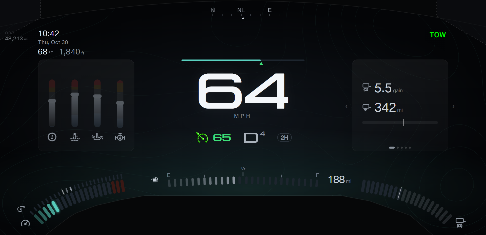

F150 cluster · Design round 26 · Towing A · Speed bar above the digits
Your direction: the speed sat at the wrong height; the big speed value goes below the bar, and the bar needs no numbers.
Every shot passes the margin check (capture.js: 24 shots).
- The center now lines up with the cards. The bar sits on the card top line (y 236). The row of cruise, gear, and drive mode sits on the line of the temperature symbols.
Before, the digits started 40 px above the cards and floated over them.
- Order from the top: bar, speed digits, MPH, then the row. The numbers under the bar are gone; the digits carry the number.
- The cruise set mark moves under the bar and points up at the bar.
- At crawl speed the steering bar takes the same place, with the ticks above the bar.
- The shots use gear option B from round 25 (the gear in the row). The last three pairs show gear option A. That pick is still open.
Pick: open. A or B: ticks on the speed bar.
- A · A plain bar. The fill alone shows the speed against the full scale.
- B · Ticks every 10 mph above the bar, longer every 20. The ticks give a scale reference without numbers.
A · cruise set: the set mark points up at the bar

B · cruise set: the set mark points up at the bar
A · six warning lights and cruise set
A · transmission hot: the alert clears the bar
B · crawl: the steering bar in the same place
A · 104 mph: the widest digits
A · gear option A: the gear beside the digits
A · gear option A at 104 mph
B · gear option A at 104 mph
B · gear option A at crawl speed